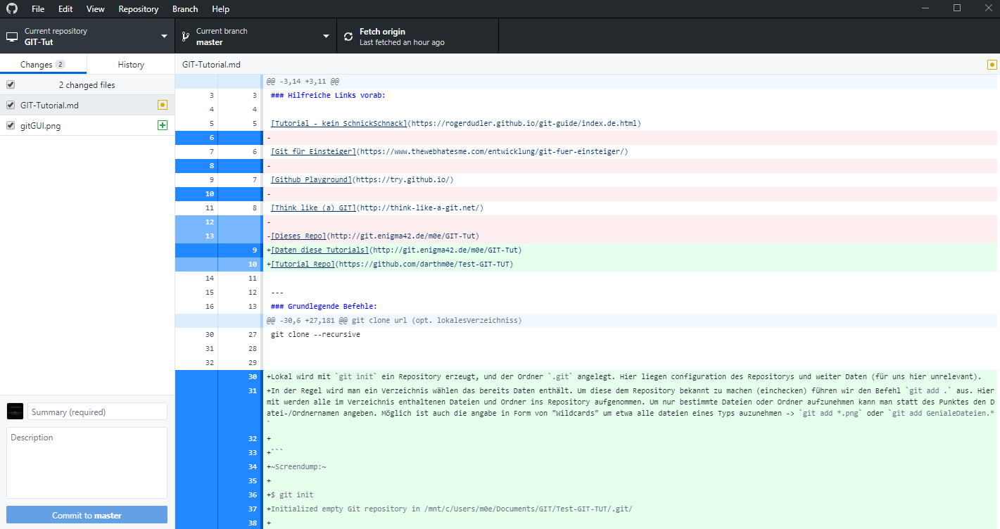

Work in Progress !
Made by m0e@2019 — E42L
[TOC] ### Hilfreiche Links vorab: Offizielles GIT Buch – Sehr gut, mehrsprachig
Tutorial - kein SchnickSchnack – kurz und knackig
Github Playground – inkteraktive Spielwiese
Daten diese Tutorials – Repo des Tutorials
Tutorial Repo – Das Beispielrepository
git init
git add . || git add
git commit -m “grund” || git commit -a -m “grund”
git remote add origin http://pfad.zum/repo.git
git push -u origin master (master ist hier der Name des Branch, also hier der Hauptbranch)
git clone url (opt. lokalesVerzeichniss)
git clone –recursive
GIT ist ein relativ neues VCS (Version-Controll-System), welches im Unterschied zu vielen anderen Änderungen an Dateien und Ordnern nicht als Diffs (fortlaufende Liste der Änderung an Dateien) sondern erzeugt bei einem Commit einen Snapshot des Repository-“Dateisystems” Hierbei werden effizienter weise nur geänderte Dateien neu gespeichert. Auf unveränderte Dateien wird nur ein Verweis auf den jeweiligen Snapshot angelegt. Dieses Konzept vereinfacht unter anderem die Arbeit mit Branches (Grundlagen > Branching).
Lokal wird mit git init ein Repository erzeugt, und der Ordner .git angelegt. Hier liegen Konfigurationsdateien des Repositorys und weiter Daten (für uns hier unrelevant). In der Regel wird man ein Verzeichnis wählen das bereits Daten enthält. Um diese dem Repository bekannt zu machen (einchecken) führen wir den Befehl git add . aus. Hiermit werden alle im Verzeichnis enthaltenen Dateien und Ordner ins Repository aufgenommen. Um nur bestimmte Dateien oder Ordner aufzunehmen kann man statt des Punktes den Datei-/Ordnernamen angeben. Möglich ist auch die Angabe in Form von “Wildcards” um etwa alle Dateien eines Typs auzunehmen -> git add *.png oder git add GenialeDateien.*
~Screendump:~
$ git init
Initialized empty Git repository in /mnt/c/Users/m0e/Documents/GIT/Test-GIT-TUT/.git/
$ git add *.mdUnsere Dateien wurden jetzt zur Versionskontrolle (Staging Area) hinzugefügt, im Git Jargon staged oder staging genannt. mit git status zeigt uns GIT diesen Zustand auch an:
~Screendump:~
$ git status
On branch master
Initial commit
Changes to be committed:
(use "git rm --cached <file>..." to unstage)
new file: README.md
new file: Test.md
Nachdem nun alle Dateien in der Staging Area gesammelt sind können wir einen Commit ausführen und die Dateien zum Repository hinzufügen. git commit öffnet den Standard Texteditor mit einer ähnlichen Meldung:
GNU nano 2.7.4 File: /mnt/c/Users/m0e/Documents/GIT/Test-GIT-TUT/.git/COMMIT_EDITMSG
# Please enter the commit message for your changes. Lines starting
# with '#' will be ignored, and an empty message aborts the commit.
# On branch master
#
# Initial commit
#
# Changes to be committed:
# new file: README.md
# new file: Test.md
#hier kann man noch weiter Kommentare einfügen, i.d.R. wird man die vorhanden Kommentare lassen, welches die Ausgabe von git status enthält. Hierdurch erkennt man besser was genau mit dem Commit geändert wurde. Gibt man zusätzlich den Schalter -v mit an wird noch ein DateiDiff der Commitmeldung hinzugefügt.
Bei kleinen Änderungen kann die Commit Nachricht auch direkt im BEfehl mitgegeben werden
$ git commit -m "Schneller Commit, kleine Bugfixes"
[master (root-commit) f99b0dd] Schneller Commit, kleine Bugfixes
2 files changed, 4 insertions(+)
create mode 100644 README.md
create mode 100644 Test.mdDie Ausgabe darunter teilt uns nun mit das der Commit erfolgreich dem master Branch hinzugefügt wurde, die SHA-1 Checksumme (f99b0dd), die Commitmeldung, die geänderten Dateien und eine Angabe über die hinzugefügten oder entfernten Zeilen.
Für Dateien die bereits mit git add hinzugefügt wurden kann man später das Staging überspringen.
$ git commit -a -m "Schneller Commit, kleine Bugfixes, OHNE Staging"
[master f205c80] Schneller Commit, kleine Bugfixes, OHNE Staging
1 file changed, 3 insertions(+)Normalerweise wird man im Umgang mit GIT einen Zentralen Server wie Github, Gitlab, Bitbucket oder selbsteghostet benutzen. Um unserem Lokalen Repository diesen Server bekannt zu machen führen wir den folgenden Befehl aus: git remote add origin https://github.com/darthm0e/Test-GIT-TUT.git Im Beispiel wird das Vorher angelegte Repository Test-GIT-TUT auf Github benutzt.
Wenn wir jetzt git push -u origin master ausführen werden unsere Daten des Commits auf den Remote Server (origin, Name wählbar) in den Master-Branch geladen. Hiermit können auch weiter Server oder Branches hinzugefügt werden. git push -u developer nightly würde die Daten auf einen mit git remote als Developer in die Nightly-Branch laden.
$ git push -u origin master
Username for 'https://github.com': supamoe25@gmail.com
Password for 'https://supamoe25@gmail.com@github.com':
Counting objects: 7, done.
Delta compression using up to 8 threads.
Compressing objects: 100% (4/4), done.
Writing objects: 100% (7/7), 612 bytes | 0 bytes/s, done.
Total 7 (delta 0), reused 0 (delta 0)
To https://github.com/darthm0e/Test-GIT-TUT.git
* [new branch] master -> master
Branch master set up to track remote branch master from origin.Gibt man nun jemandem den Link zum Repository, kann sich dieser den Inhalt anschauen, auf seinen Rechner laden, bearbeiten, änderungen hochladen (schreibrechte vorrausgesetzt) etc.
git clone <link> oder git clone --recursive <link>
lädt das Repository in einen Unterordner(Name des Repo) ins aktuelle Verzeichniss.
$ git clone https://github.com/darthm0e/Test-GIT-TUT.git
Cloning into 'Test-GIT-TUT'...
remote: Enumerating objects: 7, done.
remote: Counting objects: 100% (7/7), done.
remote: Compressing objects: 100% (4/4), done.
remote: Total 7 (delta 0), reused 7 (delta 0), pack-reused 0
Unpacking objects: 100% (7/7), done.Mit git log bzw git log -p kann man sich alle Commits bzw alle Commits mit änderungen anzeigen lassen:
$ git log
commit f205c80841f3b37957101285fc6af5b1691cc81d
Author: m0e <supamoe25@gmail.com>
Date: Sat Jan 19 16:01:40 2019 +0100
Schneller Commit, kleine Bugfixes, OHNE Staging
commit f99b0dd5b53a0f66e893bf6cd269eca779851082
Author: m0e <supamoe25@gmail.com>
Date: Sat Jan 19 15:55:32 2019 +0100
Schneller Commit, kleine Bugfixes
(END)git log -p
commit f205c80841f3b37957101285fc6af5b1691cc81d
Author: m0e <supamoe25@gmail.com>
Date: Sat Jan 19 16:01:40 2019 +0100
Schneller Commit, kleine Bugfixes, OHNE Staging
diff --git a/Test.md b/Test.md
index 980a0d5..d6baa93 100644
--- a/Test.md
+++ b/Test.md
@@ -1 +1,4 @@
Hello World!
+
+
+Was hinzugef<C3><BC>gt
commit f99b0dd5b53a0f66e893bf6cd269eca779851082
Author: m0e <supamoe25@gmail.com>
Date: Sat Jan 19 15:55:32 2019 +0100
Schneller Commit, kleine Bugfixes
diff --git a/README.md b/README.md
new file mode 100644
index 0000000..8829e9f
--- /dev/null
+++ b/README.md
@@ -0,0 +1,3 @@
+Hello World !
+
+Daten fuers GIT Tut
diff --git a/Test.md b/Test.md
new file mode 100644
index 0000000..980a0d5
--- /dev/null
+++ b/Test.md
@@ -0,0 +1 @@
+Hello World!
(END)Eine Übersicht über die vorhandenen Remote Repositorys gibt git remote -v
$ git remote -v
origin https://github.com/darthm0e/Test-GIT-TUT.git (fetch)
origin https://github.com/darthm0e/Test-GIT-TUT.git (push)Um die aktuellsten Änderungen ins lokale Repository zu übertragen führt man git pull aus. GIT versucht die neuen Commits aus dem Remote Repository zu holen und mit den lokalen Dateien zusammenzuführen.
git branch “branchname” -> Branch erstellen
git checkout “branchname” -> Zum Branch wechseln
git push –set-upstream origin “branchname” -> Branch hochladen
git checkout master -> Zurück zum master Branch
git merge “branchname” -> branch einchecken
git branch -d “brnachname” -> branch löschen
git push -> hochladen
In GIT (wie auch in anderen VersionControll-Systemen - VCS) können mit Hilfe von Tags wichtige Punkte in der Commit-Hitory markiert werden. Normalerweise werden hiermit ReleaseVersionen oder andere Meilensteine markiert.  Um sich die in einem Repository vorhandenn Tags anzeigen zu lassen wird
Um sich die in einem Repository vorhandenn Tags anzeigen zu lassen wird git tag benutzt. Hiermit werden die Tags in alphabetischer Reihenfolge aufgelistet
$> git tag
0.1
help
testingUm nur bestimmte Tags zu sehen kann man folgenden Befehl verwenden: git tag -l 'v1.4.2'
GIT unterscheidet 2 Arten von Tags, einfache (engl. lightweight) und kommentierte (engl. annotated) Ein normaler Tag ist lediglich ein Zeiger auf einen Commit. Der Tag bleibt mit dem Commit verbunden und wird auch von nachfolgenden Änderungen nicht beeinflusst. Ein Kommentierter Tag wird als vollwertiges Objekt in GIT gespeichert (ähnlich Commit) und umfasst eine Checksumme, Namen des Verfassers, die eMail Adresse das Datum und sowie eine Tag Nachricht. Desweiteren kann solch ein Tag mit GPG signiert werden.
Um nur bestimmte Tags zu sehen kann man folgenden Befehl verwenden: git tag -l 'v1.4.2' git tag -> Tags anzeigen
git tag -a v1.2.3 -m “Version 1.2.3” -> Kommentierter Tag erstellen
git tag -s v1.5 -m ‘my signed 1.5 tag’ -> Tag mit GPG signieren
git push origin –tags -> Tags in Repo pushen
Um für GIT Befehle eine Autovervollständigung zu erhalten, läd man (hier für BASH) das Script unter: Git-completion.bash herunter, und fügt source ~/git-completion.bash zu .bashrc hinzu.
git config –global alias.upPush ´git add . ; git commit -a -m; git push -u origin´
git fetch origin
git reset –hard origin/master
GitBash & GitGUI  GitGUI Hauptfenster
GitGUI Hauptfenster
Github Desktop  Github Desktop Hauptfenster
Während der Entwicklungsarbeit wird der Workflow meistens in etwa so aussehen:
#> git pull#> git checkout -b meinfeature master#> git add .#> git commit -m "Changes xyz"#> git push -u origin meinfeature#> git checkout master#> git pull#> git merge meinfeature#> git branch -d meinfeatureAktualisierten master auf den Server pushen: #> git push
Fertig
git stat
git diff
git fetch
git mv
git show
git remote show origin
git remote rm <name>
git rebase
~ Made by m0e@2019 — enigma42Labs ~